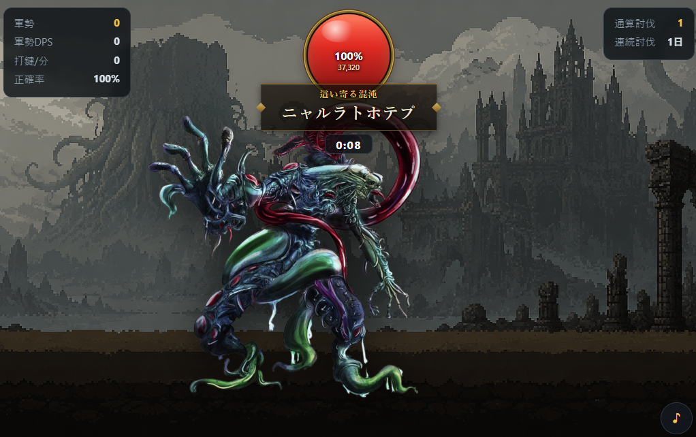

Cthulhu Typing
A typing-meets-summoning battle: every hiragana word you finish typing in romaji summons one soldier, and your growing army keeps attacking the boss on its own. Bosses are gods from the Cthulhu Mythos, one new one every day. Played with a physical keyboard - PC only.

Read the guide below, or load the game when you are ready.
Best played on a PC with a physical keyboard (not available on phones). Heads-up: English controls and help are available; the practice text and story are Japanese - you type hiragana words using romaji (Latin letters), which makes it great practice if you're learning Japanese.
In this game, your keystrokes don't produce attacks - they produce soldiers. Finish typing a hiragana word in romaji and a soldier appears; every soldier you've summoned keeps pounding on the boss even while your hands are resting. The more you type, the bigger your army grows and the faster the damage snowballs - it feels like a typing game crossed with an idle clicker. Standing in your way are 43 gods and creatures from the Cthulhu Mythos. One boss appears per day, and every player in the world faces the same one. Run length depends on your typing speed, and there's no time limit on the kill, so you don't need to be a fast typist. The game is in Japanese, so it doubles nicely as Japanese typing practice: the words appear in hiragana and you type them in romaji.
At a Glance
| Genre | Typing x summoning battle (with an idle-clicker feel) |
|---|---|
| Price | Free, no sign-up, no install |
| Platform | PC only (physical keyboard required; not playable on phones) |
| Input | Romaji (Latin letters). No Japanese input software needed - the game reads your keystrokes directly |
| Language | English controls and help; Japanese practice text; words are shown in hiragana and typed in romaji - great for Japanese learners |
| Bosses | 43 Cthulhu Mythos gods and creatures. One per day, shared by all players |
| Session length | Varies with typing speed and the daily boss |
| Saves | Local profile in browser storage; submitted names and scores also appear online. No account-based transfer |
How to Play
- 1. Type the word to the end: finish typing the hiragana word on screen in romaji and one soldier is summoned
- 2. Soldiers fight on their own: everyone you've summoned keeps attacking automatically. The battle never stops, even when you do
- 3. Keep typing to grow your army: more soldiers means faster damage. Whittle the boss's HP to zero and today's hunt is complete
Don't worry about failing. There's no time limit and no game over - type as slowly as you like, your army keeps stacking up, and your army keeps damaging the boss while the game runs. After the kill, the next boss and a fresh word list arrive at midnight Japan time.
Tips
- Long words summon strong soldiers: the longer the word, the mightier the unit. A 2-character word gets you a villager; a 5-character word summons dragon, angel, or paladin-class troops. Long words are your big opportunities
- Five flawless words call reinforcements: type five words in a row without a single miss and an extra ally joins the fight. Clean typing grows your army faster
- Chasing score? Prioritize accuracy: score is typing speed x accuracy x boss strength. Misses hit your accuracy directly, so finishing words cleanly beats frantic button-mashing
- Past 40 soldiers, enjoy the merge: once your army tops 40, units start stacking into "x2, x3..." giants. The screen suddenly feels a lot heavier
- Watch the formations: each boss changes how your army gathers. Face a boss head-on and your troops will pincer it from both sides
All-Time Kill Leaderboard
Besides the daily best-score ranking (which resets every day), there's an all-time leaderboard tracking how many bosses you've defeated in total. Just enter a name and play - you're listed automatically, no registration required.
Open the leaderboard in a new tab ↗
Developer's Note
After finishing my previous game, Soldier Typing, something kept bugging me. When typing means attacking, the experience gap between fast and slow typists is just too wide. So this time I flipped the idea: your keystrokes don't attack, they summon. What you type stays on screen as an asset - soldiers who keep working even when your hands stop. Slow typists always win eventually if they put in the time, and fast typists get the rush of watching their army balloon. Grafting the idle-clicker feedback loop onto typing is the heart of this game.
The other big decision was the daily boss. I could have unlocked all 43 at once, but I deliberately went with "today it's Hastur, tomorrow it's some other god," with every player facing the same one. I wanted this to be a habit game - the kind you play once a day for 2-3 minutes, glance at the leaderboard, and close, like brushing your teeth. The score formula (typing speed x accuracy x boss strength) exists for the same reason: some days the boss is tanky and some days it's weak, and the formula keeps the ranking fair either way. As for why the Cthulhu Mythos - honestly, I just love it. I hope you enjoy the sheer absurdity of unspeakable elder gods getting swarmed by a mob of villagers and paladins.
FAQ
- Once I beat today's boss, is that it for the day?
- Yes. The current normal game allows one clear per day on a saved profile. A new boss is selected at midnight Japan time; reload the game after midnight to load the next day.
- I'm a slow typist. Can I still win?
- Yes. There's no time limit and no game over. Your summoned soldiers keep attacking even while you rest, so as long as you keep typing at your own pace, the boss will always fall.
- Do I need Japanese input software (an IME)?
- No. You type plain romaji with a regular keyboard. Turn Japanese IME off so the game can read the Latin-letter keystrokes. The displayed romaji tells you what to type.
- Can I play on a phone or tablet?
- No. It's built around typing romaji on a physical keyboard, so it's PC only.
- Do I need an account for the leaderboard?
- No registration needed. Enter a name, play, and your best score of the day is posted automatically. The daily ranking resets each day, and there's a separate all-time ranking for total kills.
- Does my progress carry over to another computer?
- No. Your local profile and daily-clear state use browser storage. Submitted names and scores are also sent to the online leaderboard. Clearing site data can lose access to your local profile; there is no account-based transfer.
Credits
Design & development: Bubblegum (Bubblegum Game)
Theme: based on the gods and creatures of the Cthulhu Mythos (Cthulhu, Nyarlathotep, Hastur, and more - 43 in total)
This game is the successor to Soldier Typing. The story behind its development is covered in this blog post.